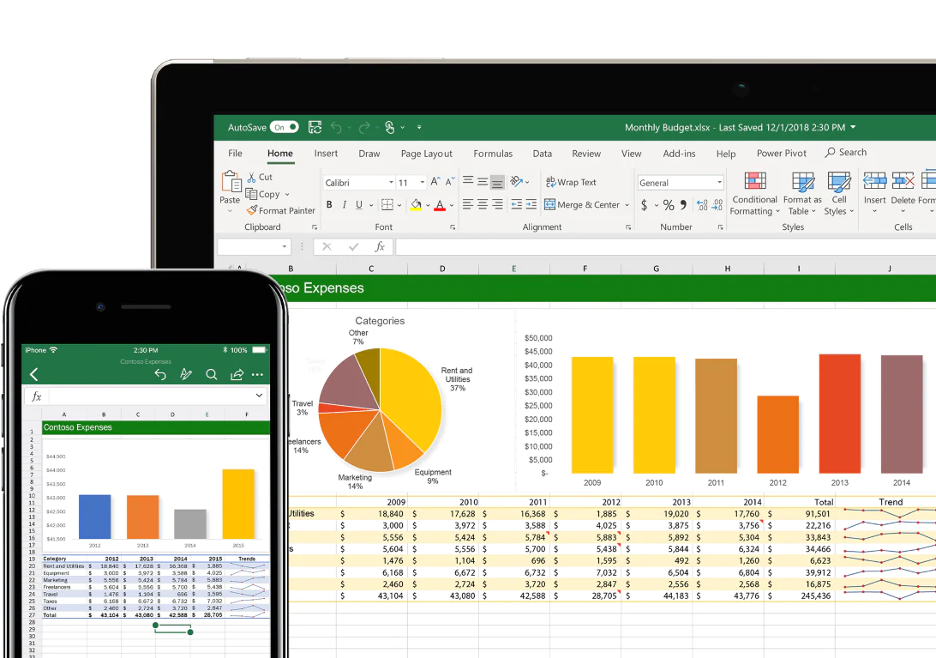

Dua Rumus MS Excel yang Jarang Digunakan Namun Sangat Bermanfaat!
by Rafi Muhammad
Mayoritas penduduk di Indonesia menggunakan Microsoft Excel sebagai aplikasi untuk menghitung data. Akan tetapi, Microsoft Excel juga bisa melakukan hal-hal yang lebih dari itu, seperti mengolah suatu data, kalkulasi matematis, bahkan membuat grafik pun bisa dilakukan dengan aplikasi ini. Read More...

Jenis-jenis Keyboard yang Ada Hingga Saat Ini!
by Rafi Muhammad
Di zaman milenial, hampir seluruh masyarakat dunia menggunakan keyboard untuk mengetik. Jenis keyboard yang paling populer adalah QWERTY. Pasti laptop atau komputer kalian juga memakai jenis keyboard tersebut. Namun, masih banyak jenis keyboard lainnya loh! ... Read More...